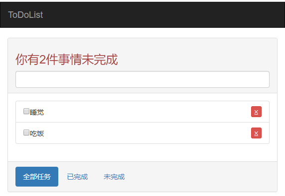

功能：1.根据数据显示当前所未完成的事件，
2.可通过输入框进行事件的添加，可标记已完成的事件并进行删除，可修改已添加的事件。
ps:插件引入均使用本地文件，需改用静态CDN。
效果：

代码实现：
<!--todo.html-->
<!-- <!DOCTYPE html> -->
<html>
<head>
<title></title>
<meta charset="utf-8">
<link rel="stylesheet" href="node_modules\bootstrap\dist\css\bootstrap.css">
<style>
.del{
text-decoration: line-through;
color: #cccccc!important;
}
</style>
</head>
<body>
<div id="app">
<nav class="navbar navbar-inverse">
<div class="container-fluid">
<div class="navbar-header">
<a class="navbar-brand" href="#">
ToDoList
</a>
</div>
</div>
</nav>
<div class="container">
<div class="row">
<div class="col-md-8 col-md-offset-2">
<div class="panel panel-default">
<div class="panel-heading"><h3 class="text-danger">你有{{count}}件事情未完成</h3>
<input type="text" class="form-control" v-model="title"@keyup.13="add">
</div>
<div class="panel-body">
<ul class="list-group">
<li class="list-group-item" v-for="(todo,index) in todos" @dblclick="remenber(todo)">
<div :class="{del:todo.isSelected}" style="display:inline-block;" v-show="cur!==todo">
<input type="checkbox" v-model="todo.isSelected">{{todo.title}}
</div>
<!-- 动态绑定样式 -->
<input type="text" v-model="todo.title" v-show="cur===todo" @blur="leave" v-focus="cur===todo">
<button class="pull-right btn btn-xs btn-danger"@click="remove(todo)">⨱</button>
</li>
</ul>
</div>
<div class="panel-footer">
<ul class="nav nav-pills">
<li role="presentation" class="active"><a href="#">全部任务</a></li>
<li role="presentation"><a href="#">已完成</a></li>
<li role="presentation"><a href="#">未完成</a></li>
</ul>
</div>
</div>
</div>
</div>
</div>
</div>
</body>
<script src="node_modules\axios\dist\axios.js"></script>
<script src="node_modules\vue\dist\vue.js"></script>
<script src="todo.js"></script>
</html>//todo.js
const vm = new Vue({
el: "#app",
data: {
todos: [{
isSelected: false,
title: "睡觉"
},
{
isSelected: false,
title: "吃饭"
},
],
title: "",
cur:""
},
directives:{
// 自定义命令，参数el为操作元素，binding.value为绑定的值，添加该命令则元素自动获取焦点
focus(el,binding){
if(binding.value)
el.focus();
}
},
methods: {
leave(){
// 失去焦点时，显示所添加的事件
this.cur="";
},
// 双击时记录点击的元素
remenber(todo){
this.cur = todo;
},
add() { //用于添加事件,当按下回车添加
this.todos.push({
isSelected: false,
title: this.title
});
this.title = ""; //清空输入框的值
},
// 返回除了删除元素之外的集合
remove(todo) {
this.todos = this.todos.filter(item => item !== todo);
}
},
computed: {
// 计算事件个数，computed能够缓存，故不使用方法来实现
count(){//记得get方法要reutn
return this.todos.filter(item=>!item.isSelected).length;
}
}
});